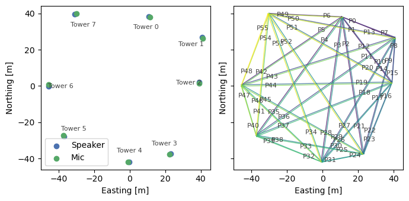
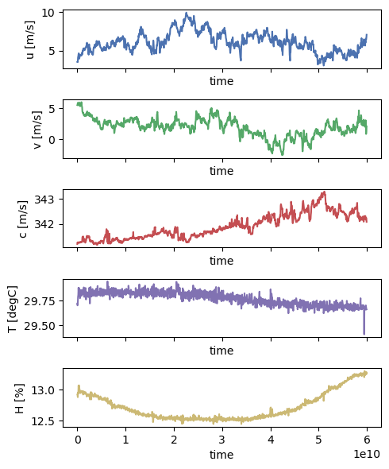
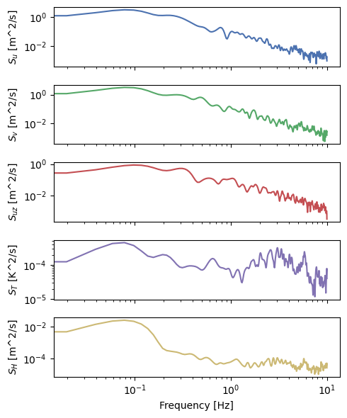
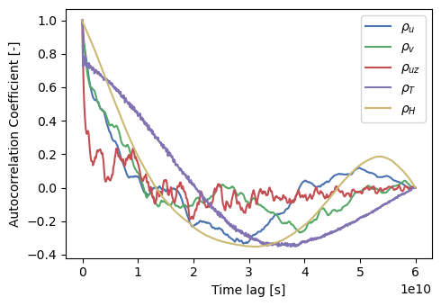
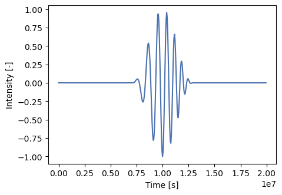
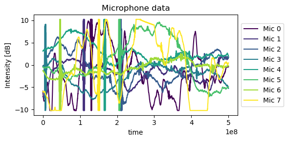
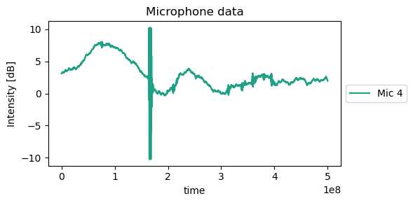

%load_ext autoreload
%autoreload 2
# hardware
import os
# analysis
import numpy as np
import xarray as xr
import pandas as pd
from scipy.integrate import simps
from scipy.interpolate import RegularGridInterpolator
# vis
import matplotlib.pyplot as plt
plt.style.use('seaborn-v0_8-deep')
# Acoustic tomography package
import atom
# configuration object
from hydra import initialize, compose
from hydra.utils import instantiate
with initialize(version_base=None, config_path="../../conf/"):
cfg = compose(config_name="configs",)
The atom Signal Processing Module#
This is the entry point to the code base for field data.
the array facility is described in the configuration data (number of measurement points, point locations, etc.)
data recorded at the AT array facility at the NREL Flatirons Campus include time series data from a sonic anemometer, and records of of the emitted chirps and microphone recordings
Acoustic tomography array object#
instatiate from configuration object
calculates path info (length, orientation, unit vector) internally
path integral information setup for later use
plot speaker and microphone locations
plot acoustic travel paths
### Array data
atarray = instantiate(cfg.atarray)
atarray.setupPathIntegrals()
fig, ax = plt.subplots(1,2, figsize=(7,3.5), sharex=True, sharey=True)
ax[0] = atarray.plotSpkMicLocations(ax=ax[0])
c = plt.cm.viridis(np.linspace(0, 1, len(atarray.ds.pathID)))
ax[1] = atarray.plotPaths(ax=ax[1], c=c)
fig.tight_layout()

Auxiliary data object#
instatiate from configuration object
plot time series
calculate and plot spectra with Welch’s method
calculate and plot autocorrelation coefficient
estimate integral time and length scales (Taylor’s hypothesis)
### Auxiliary data
auxdata = instantiate(cfg.auxdata)
auxDataPath = "../AuxData_example.txt"
auxdata.loadData(auxDataPath)
fig, ax = plt.subplots(5,1, figsize=(5, 6), sharex=True)
for ii, var in enumerate(['u','v','c','T','H']):
auxdata.ds[var].plot(ax=ax[ii], c=f'C{ii}')
fig.tight_layout()

auxdata.calculateSpectra()
fig, ax = plt.subplots(5,1, figsize=(5, 6), sharex=True)
for ii, var in enumerate(['u','v','uz','T','H']):
ax[ii].loglog(auxdata.ds.frequency, auxdata.ds[f'S_{var}'], c=f'C{ii}')
ax[ii].set_ylabel(f'$S_{{{var}}}$ [{auxdata.ds[f"S_{var}"].units}]')
ax[-1].set_xlabel('Frequency [Hz]')
fig.tight_layout()

auxdata.autoCorrelation()
fig, ax = plt.subplots(figsize=(5, 3.5))
for ii, var in enumerate(['u','v','uz','T','H']):
ax.plot(auxdata.ds.time, auxdata.ds[f'rho_{var}'], c=f'C{ii}', label=f'$\\rho_{{{var}}}$')
ax.set_ylabel(f'Autocorrelation Coefficient [-]')
ax.set_xlabel('Time lag [s]')
ax.legend()
fig.tight_layout()

auxdata.integral_scale()
auxdata.ds.attrs
{'samplingFrequency': 20.0,
'recordTimeDuration': 0.5,
'recordTimeDelta': 0.05,
'recordLength': 1200,
'sonicAnemometerOrientation': 0.0,
'windowType': 'hann',
'threshold': 0.5,
'tau_u': 7.918675695892259,
'L_u': 48.17162047075365,
'tau_v': 7.296752778678485,
'L_v': 13.957173989410366,
'tau_uz': 4.958264552346053,
'L_uz': 0.43593888321651886,
'tau_T': 1.1152540937344828,
'L_T': 33.19953070966245,
'tau_H': 12.001672723618048,
'L_H': 152.64853526854668}
Audio data object#
instatiate from configuration object
load data
isolate reference signal emitted by each speaker
plot recorded microphone data
### Microphone data
audiodata = instantiate(cfg.audiodata)
mainDataPath = "../MainData_example.txt"
audiodata.loadData(mainDataPath)
audiodata.ds
<xarray.Dataset> Dimensions: (time: 10000, mic: 8, frame: 120, spk: 8) Coordinates:
time (time) timedelta64[ns] 00:00:00 … 00:00:00.4…
mic (mic) int64 0 1 2 3 4 5 6 7
frame (frame) int64 0 1 2 3 4 5 … 115 116 117 118 119
spk (spk) int64 0 1 2 3 4 5 6 7 Data variables: speakerSignalEmissionTime (spk) float64 0.124 0.104 0.204 … 0.04 0.144 micData (time, mic, frame) float64 -5.884 … -9.248 refSig (time) float64 0.0 0.0 0.0 0.0 … nan nan nan Attributes: description: Signals recorded by microphones samplingFrequency: 20000 deltaT: 0.05 recordTimeDuration: 0.5 recordTimeDelta: 5e-05 recordLength: 10000 nMics: 8 nFrames: 120 chirpCentralFrequency: 1200 chirpBandwidth: 700 nSpeakers: 8
fig, ax = plt.subplots(figsize=(5,3.5))
ax.plot(audiodata.ds.time, audiodata.ds.refSig, label='Reference Signal')
ax.set_xlabel('Time [s]')
ax.set_ylabel('Intensity [-]')
Text(0, 0.5, 'Intensity [-]')

fig,ax = plt.subplots(figsize=(6,3), sharex=True, sharey=True)
c=plt.cm.viridis(np.linspace(0,1,audiodata.ds.nMics))
for ii, mic in enumerate(audiodata.ds.mic):
audiodata.ds.micData.sel(frame=0, mic=mic).plot(ax=ax, label=f'Mic {ii}', c=c[ii,:])
ax.set_title('Microphone data')
ax.set_ylabel(f'Intensity [dB]')
ax.legend(loc=6, bbox_to_anchor=(1,0.5))
fig.tight_layout()

fig,ax = plt.subplots(figsize=(6,3), sharex=True, sharey=True)
c=plt.cm.viridis(np.linspace(0,1,audiodata.ds.nMics))
micNumber = 4
audiodata.ds.micData.sel(frame=0, mic=micNumber).plot(ax=ax, label=f'Mic {micNumber}', c=c[micNumber,:])
ax.set_title('Microphone data')
ax.set_ylabel(f'Intensity [dB]')
ax.legend(loc=6, bbox_to_anchor=(1,0.5))
fig.tight_layout()
